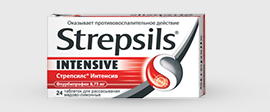
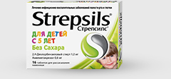
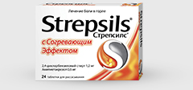

Стрепсилс®
Интенсив

Нестероидный противовоспалительный препарат, содержащий 8,75 мг флурбипрофена.
Действие:
- Облегчение боли в горле начинает отмечаться уже через 2 мин1
- Длительность обезболивающего действия более 3 часов2
- Снижение отека слизистой оболочки до 4-6 часов, что значительно облегчает затрудненное глотание3
Стрепсилс® для детей
с 5 лет без сахара

Действие:
- Обезболивающее действие реализуется за счет способности амилметакрезола блокировать ионные каналы, подобно местным анестетикам1
- Действие начинается уже через 5 минут после применения и сохраняется до
2 часов2
- Не способствует повышению риска развития кариеса у детей, т.к. не содержит сахара
Новинка!
Стрепсилс®
с согревающим эффектом

При боли в горле большинство потребителей хотят ощущать тепло и комфорт.*
Действие:
- 97% потребителей ощущают эффект согревания2
- Длительное облегчение боли
в горле до 2-х часов1
- Ощущение комфорта и тепла в горле
Действие начинается через 5 минут1